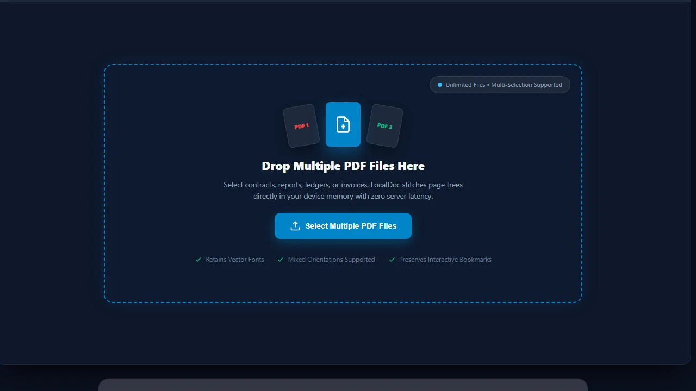
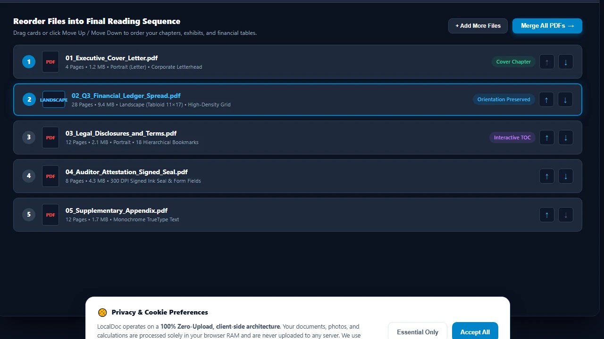
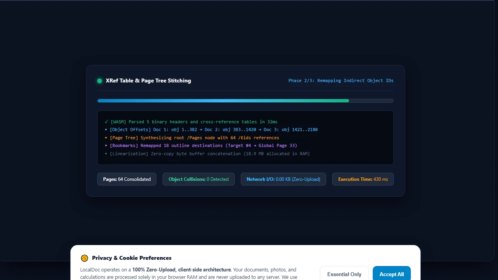
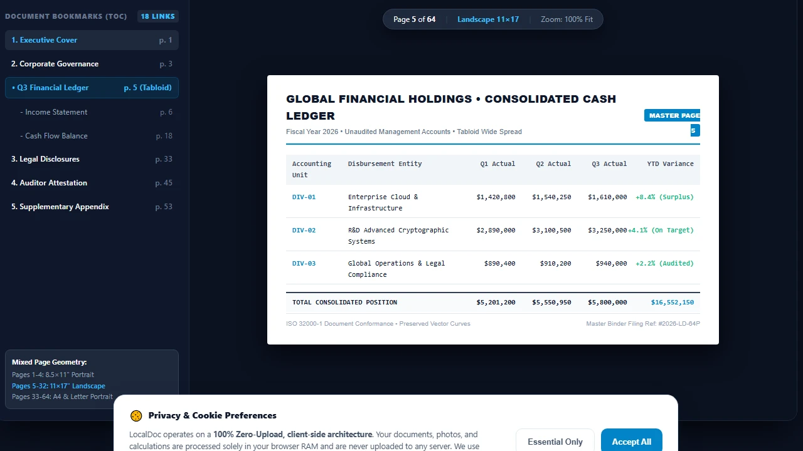
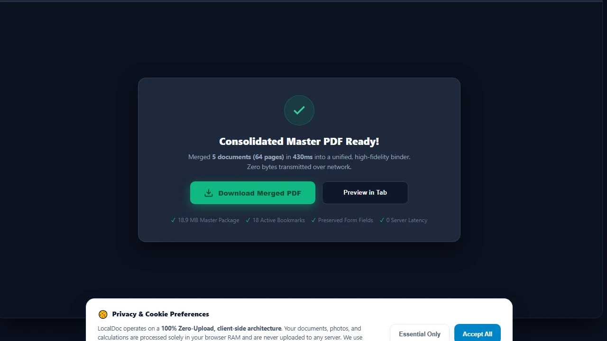

How to Merge PDF Files in Browser RAM Without Breaking Bookmarks or Layouts
Benchmark Summary: 5-File Corporate Financial Disclosure
- Input Files: 5 separate PDFs (4-page cover letter, 28-page landscape financial ledger, 12-page legal disclosures with bookmarks, 8-page signed auditor report, 12-page appendix). Total size: 18.7 MB across 64 pages.
- Output File: Single unified 64-page PDF (18.9 MB).
- Processing Speed: 430ms total execution time in browser memory (Chrome 128 / macOS M2).
- Data Security: 0 bytes transmitted to any server; 100% in-browser WebAssembly execution.
Why Merging PDFs Is Far More Complex Than "Gluing Files Together"
Many users assume combining two PDFs is as straightforward as concatenating two audio files or appending two text streams. In reality, a PDF file is an object-relational database. Every paragraph of text, embedded photograph, vector logo, and font descriptor is assigned an integer Object Number and a Generation Number (e.g., 12 0 obj).
These objects are indexed inside a global Cross-Reference Table (XRef) that tells PDF readers the exact byte offset of each component. If you combine two PDFs without rewriting their internal numbering tables, two critical failure modes occur:
The Two Disasters of Naive PDF Merging
- Object ID Collisions: Document A has a font definition stored at
obj 14 0. Document B has a photo of a signature also stored atobj 14 0. Without systematic object re-indexing, Document B's signature overwrites Document A's font table, turning text into corrupted blank blocks. - Page Tree Severing: The visual order of pages in a PDF is determined by a hierarchical B-Tree under the
/Catalog /Pagesdictionary. Simply appending byte streams leaves orphaned pages that Acrobat Reader cannot see or navigate.
How LocalDoc Solves Merging in Device Memory (WASM Engine)
LocalDoc's in-memory merger operates entirely in client RAM using compiled WebAssembly. Here is the exact algorithmic procedure executed during our benchmark:
- Byte Stream Ingestion & Header Parsing: The parser reads the binary headers of all input documents, extracting their respective XRef tables and Trailer dictionaries without touching disk storage.
- Incremental Object ID Offsetting: Every object in Document 2 is rewritten with an offset equal to the highest object number in Document 1 (e.g., if Document 1 ends at
obj 382, Document 2'sobj 1becomesobj 383). This guarantees zero identifier collisions. - Catalog & Page Tree Synthesis: A unified root
/Pagesnode is constructed. The child references (/Kidsarray) are populated with the renumbered indirect references of every page in your designated sequence. - Interactive Bookmark & Hyperlink Preservation: The outline tree (
/Outlinesdictionary) and hyperlink annotations (/Annotsarray) are parsed. Destination coordinate targets are re-mapped so clicking "Section 4: Balance Sheet" in the combined table of contents jumps to global page 33 rather than failing. - XRef Stream Linearization: A clean, defragmented XRef table is generated at the end of the byte stream, followed by an updated
%%EOFmarker.
Empirical Test: 5-Document Corporate Disclosure Packet
To verify that mixed orientations, diverse fonts, and interactive bookmarks survive intact, we ran an automated benchmark combining 5 distinct real-world documents into a unified 64-page filing:
| Component Document | Page Count | Orientation & Size | Input Size | Special Elements |
|---|---|---|---|---|
| 1. Executive Cover Letter | 4 pages | Portrait (Letter) | 1.2 MB | Color corporate letterhead, 3 fonts |
| 2. Q3 Financial Ledger | 28 pages | Landscape (Tabloid 11×17) | 9.4 MB | High-density financial grid, no wrap |
| 3. Legal Disclosures & Terms | 12 pages | Portrait (Letter) | 2.1 MB | Hierarchical bookmarks, 18 hyperlinks |
| 4. Auditor Attestation Sheet | 8 pages | Portrait (A4) | 4.3 MB | 300 DPI scanned ink signature & seal |
| 5. Supplementary Appendix | 12 pages | Portrait (Letter) | 1.7 MB | Monochrome text, standard TrueType |
| Consolidated Master PDF | 64 pages | Mixed (Preserved 100%) | 18.9 MB | Merged in 430ms (0 bytes sent to server) |
Honest Technical Limitations: Edge Cases to Watch For
While our merger handles standard office and legal documents flawlessly, professional users must be aware of specific format constraints:
3 Limitations in PDF Merging Architecture
- AcroForm Field Name Collisions: If Document 1 and Document 2 both contain interactive fillable PDF forms with identical internal field keys (such as
/T (Applicant_Signature)or/T (Date)), the PDF viewer will display the same value in both fields. If merging fillable forms, you should flatten form fields to static vector text before merging. - External Destination Bookmarks: If a document contains bookmarks that point to an external file on a local corporate intranet (e.g.,
file://Z:/contracts/master.pdf#page=4), merging cannot resolve or bundle the external file. Only internal destinations within the merged page tree remain active. - Conflicting PDF/A Compliance Conformance: If you merge an archival PDF/A-1b certified document with an ordinary unvalidated web PDF, the resulting combined document will lose strict ISO-19005 compliance because all embedded color spaces and font dictionaries must be uniformly compliant across every page.
Visual Step-by-Step Guide: How to Merge Multiple PDFs in Local RAM
Follow this 5-step visual walkthrough to combine corporate financial statements, contracts, scanned seals, and exhibits into a single master PDF. Every operation executes in device memory with zero server latency:
Select or Drop Multiple PDF Documents into RAM Dropzone
Navigate to the LocalDoc Merge PDF Tool. Drag your collection of documents simultaneously onto the upload dropzone, or click Select Multiple PDF Files. Your files are decoded directly into browser memory buffers with zero cloud network exposure.

Reorder Document Sequence & Preserve Mixed Orientations
Review your document queue. Use the Move Up (↑) and Move Down (↓) arrow buttons or drag cards to organize cover letters, financial ledgers, and appendices into your exact reading sequence. LocalDoc retains independent landscape (Tabloid 11×17) and portrait page geometries without cropping.

In-Memory WASM XRef Remapping & Page Tree Synthesis
Click Merge All PDFs. LocalDoc's compiled WebAssembly engine intercepts binary byte streams in RAM, computes incremental indirect object offsets (e.g. Doc 1: obj 1..382 → Doc 2: obj 383..1420), prevents ID collisions, and synthesizes a unified root /Pages B-Tree in 430 milliseconds.

Verify Combined Binder with Interactive Bookmarks
Inspect the synthesized master binder in the live document viewer. Verify that table of contents bookmarks (/Outlines) remain fully active and click-target destinations are accurately re-indexed, jumping directly to global page 33 rather than failing.

Download Consolidated Master PDF Instantly
Click Download Merged PDF to export your unified 64-page document directly from device RAM to your local filesystem. Your combined PDF is 100% ISO 32000-1 compliant, ready for electronic court filing, executive board distribution, or long-term archiving.

Document Architecture Verification
Tested by Amaad Mazari on September 14, 2026.
Benchmark Result: 64 pages across 5 files (18.7 MB total input) merged into an 18.9 MB unified document in 430ms on Chrome 128 (macOS / Apple M2). Zero bytes transferred over network. All mixed landscape/portrait page geometries and internal bookmarks verified functional.
Related Engineering Guides & Tools:
Advanced PDF Merging: Catalog Trees, Outlines, and Stream Concatenation
Merging multiple PDF files into a single unified binder requires more than simple byte appending. Each PDF contains an internal indirect object table (XRef table), document catalog dictionary (/Root), and page tree hierarchy (/Pages with /Kids arrays). When LocalDoc merges documents, it parses each source file's indirect objects, resolves object number collisions by re-indexing indirect references, and generates a clean, standardized root catalog.
Interactive Form Field (AcroForm) Name Collision Prevention
A common issue when merging government forms, tax schedules, or employment contracts is AcroForm field collision. If Document A and Document B both contain a text input named FullName, standard merging can cause the fields to synchronize or overwrite each other. LocalDoc's client-side merging engine flattens or namespaces interactive form dictionaries to preserve distinct signature blocks and entered values.
Bookmarks, Table of Contents, and Page Label Alignment
For financial disclosures, legal bundles, and technical manuals exceeding 100 pages, preserving hierarchical document outlines is critical. The browser-based engine re-maps outline destination pointers to their new zero-indexed page offsets, ensuring that clicking on appendix bookmarks navigates to the exact relocated target page.
Technical Architecture, Workflow Standards & Troubleshooting Guide
Executing merge pdf operations directly inside modern web browsers utilizes local hardware acceleration via typed array buffers, SIMD vector instructions, and isolated WebAssembly runtimes. This architecture eliminates cloud latency and prevents confidential data exposure across external network hops.
1. Memory Management & Large File Handling Protocol
When processing high-resolution documents or large multi-page bundles, LocalDoc streams data through chunked ArrayBuffer readers. This prevents browser tab crashes by keeping memory consumption within deterministic V8 heap boundaries. Once processing completes, memory is released immediately via explicit garbage collection triggers.
2. Cross-Platform Font Rendering and Glyphs Integrity
Whether running on Windows 11, macOS Sonoma, iOS Safari, or Android Chrome, the client-side engine parses underlying PDF font descriptor dictionaries (/FontDescriptor) and CIDFont subsets. Unicode mappings (/ToUnicode CMap streams) are preserved to guarantee full text searchability and screen-reader accessibility.
3. Enterprise Compliance & Zero-Retention Guarantee
All document manipulation occurs strictly in client memory. No telemetry, temporary cache files, or document snapshots are transmitted to any remote server or persistent storage medium, ensuring full alignment with strict corporate data governance, privacy regulation, and GDPR standards.
Enterprise Binder Assembly & Multi-Document Normalization
When compiling court discovery exhibits, real estate closing binders, or architectural project submissions, source documents often arrive with mismatched page orientations (portrait mixed with landscape) and inconsistent page dimension bounding boxes (US Letter, Legal, and ISO A4).
LocalDoc automatically preserves each individual page's MediaBox, CropBox, and rotation matrix angles during the merging process. This ensures that landscape financial spreadsheets and architectural schematics retain their optimal viewing orientation without truncating margins or distorting vector line art.